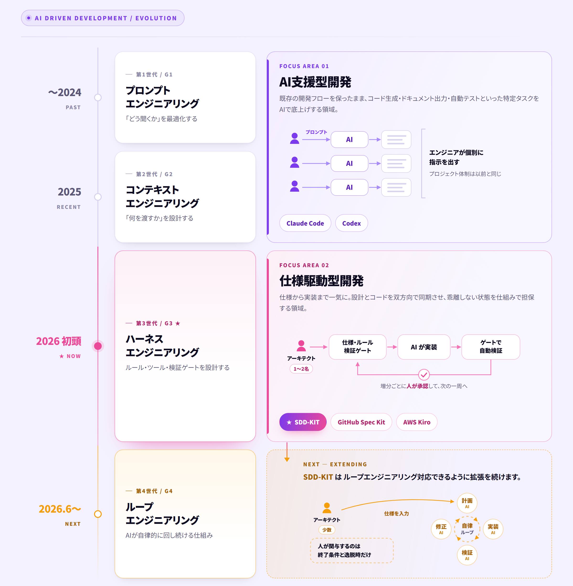

AIによる支援から、仕様駆動型による自律開発、そして人材として現場へ。AI Innovation 部は、先端技術を“実際に使える形”に変えていく部隊です。アジャイルの価値観を重視し、試すだけで終わらせず、成果まで走り切ります。
AI Innovation 部が担う領域。単独でも、掛け合わせても。お客様・社内のフェーズに合わせて動きます。
コード生成、ドキュメント出力、自動テストなど、特定タスクをAIが強化。既存の開発フローを保ったまま、生産性を底上げします。
AIがより広い範囲を自律的に開発。弊社オリジナルFramework「SDD-KIT」を核に、設計＝コードの一貫性を保ちながら、仕様から実装まで一気に。設計とコードは双方向で同期し、どちらを更新しても乖離しない状態を保ちます。
AI活用に強い人材が、SES的に現場へ。チームに入り込み、AIを前提とした開発を回しながら、内製化まで伴走します。
プロンプト → コンテキスト → ハーネス → ループ。世代ごとに移り変わる主戦場の中で、私たちの3領域がどこを担っているかを整理しました。

私たちは、アジャイルの価値観を軸に開発を進めます。作り込んでから一度に出すのではなく、小さく動くものを積み重ね、実物で対話しながら正解に近づけていきます。
デモやPoCで満足しません。実際の開発・業務に組み込み、成果として残るところまで責任を持ちます。
機密データをAIに学習させない設計で、セキュリティーに厳しい現場でも導入可能。
人月ではなく、実現した価値で評価いただく。AIによる加速効果を、そのままメリットとして還元します。